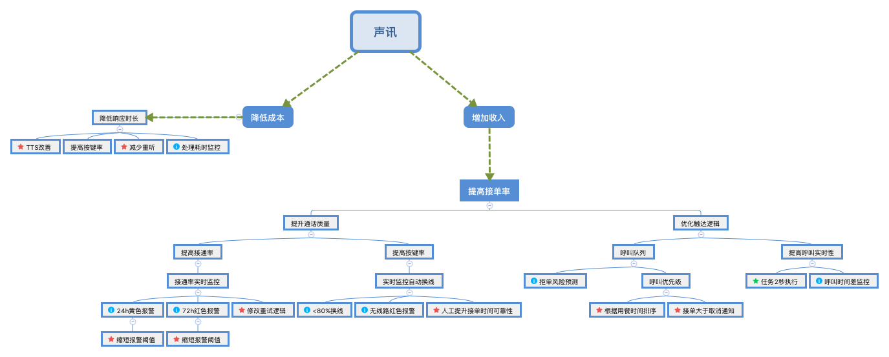

声讯改进梳理
1.现状
接通率按键率：
IVR服务商:天润
呼叫任务总数:26287
接通率为:52.97675657168943%
订单维度接通率为:83.56620093147039%
订单维度净接通率为:90.62049062049061%
按键率为:80.59744363061898%
订单维度按键率为:94.10828025477707%
IVR服务商:中通
呼叫任务总数:3282
接通率为:41.95612431444241%
订单维度接通率为:72.70471464019852%
订单维度净接通率为:86.34577603143418%
按键率为:45.67901234567901%
订单维度按键率为:69.73833902161547%
总计：
呼叫任务总数:29569
接通率为:51.764487023308%
订单维度接通率为:82.371437439430484%
订单维度净接通率为:90.150272015694403%
按键率为:76.756416189275583%
订单维度按键率为:91.427586719129294%
商家维度：所有触达到商家的订单呼叫时间 → 得到结果的平均时间:126.7965秒
select avg(finished_time - expect_send_time) from call_trigger where expect_send_time > '1499011200' and expect_send_time < '1499616000' and result_message in ('accept','refuse') and status = 20 limit 100;
所有订单呼叫时间 → 得到结果的平均时间:171.4527秒
select avg(finished_time - expect_send_time) from call_trigger where expect_send_time > '1499011200' and expect_send_time < '1499616000' and result_message != 'call校验失败,请检查template中的callRequirement' and status = 20 and template_id = 1 limit 100;
用户维度：下单→ 得到结果平均时间：3900.2543秒
select avg(finished_time - create_time) from call_trigger where create_time > '1499011200' and create_time < '1499616000' and status = 20 limit 100;
下单→ 得到结果平均时间（抛出大于1小时的订单）：208.4058秒
select avg(finished_time - create_time) from call_trigger where create_time > '1499011200' and create_time < '1499616000' and status = 20 and finished_time - create_time < 3600 limit 100;
预计呼叫时间与实际呼叫时间差值：29.8832秒 （15秒/次的定时任务 大致呼叫队列影响22秒，定时影响7.5秒）
select avg(send_time - expect_send_time) from ivr_call where status = 20 and send_time != 0 and expect_send_time!= 0 limit 100;
订单呼叫次数分布
count(*) | count |
+----------+-------+
| 65857 | 1 |
| 8012 | 2 |
| 2726 | 3 |
| 2351 | 4 |
| 726 | 5 |
| 447 | 6 |
| 88 | 7 |
| 16 | 8 |
| 3 | 9 |
| 2 | 10
select count(),t.count from (select count() as count,order_id from ivr_call where trigger_id in (select id from call_trigger where result_message in ('accept','refuse') and create_time > 1500480000) and order_id != -1 group by order_id order by count limit 500000) as t group by t.count;
2.分析
红色星 ：未进行
蓝色叹号：监控点
绿色星：已完成
3.关键指标
增加收入（接单）、降低成本（提高效率）
| KPI | 现状 | 目标 |
|---|---|---|
| 接通率 | 51.764487023308% | |
| 按键率 | 76.756416189275583% | |
| 订单净接通率 | 90.150272015694403% | |
| 订单按键率 | 76.756416189275583 | |
| 商家响应时长 | 171.4527秒 | |
| 用户响应时长 | 208.4058秒 | |
| 通话时长（费用） | 1.4398分/订单 | |
| 呼叫平均延迟 | 29.8832秒 |
4.TODO
新增监控
| Topic | 现象 | 响应 |
|---|---|---|
| 呼叫延迟监控 | 商家线路忙，订单多，处理慢，订单触达延迟较高 | 声讯接单商家设置默认库存？一个订单平均处理时间为2min，一小时最多30单，每时段最多下15单 |
| 处理耗时监控 | 商家处理时长远大于平均接单时间1.7min，阈值2min? | 帮扶教育提高效率，诱导使用开店宝高效接单 |
| 拒单风险预测 | 用餐时间-当前时间 < 优先级更高的订单数 * 订单最大耗时(6min) | 提高优先级？告知stock订满？ |
| 监控细粒度 |
分城市、渠道
报警优化
按键无反应优化：未按键监控上线后调研
逻辑优化
| Task | Reason | 风险 |
|---|---|---|
| 缩短未接听报警阈值 | 还未产生过红色报警，说明监控力度不够，目前还存在10%的未触达，需加大监控力度 | farmer工作量增加 |
| 修改重试逻辑 | 目前还存在10%的未触达，修改重试逻辑有可能可以提高。 | 呼叫队列更加拥堵，订单呼叫延迟有可能下降（如果订单密集） |
| 增加呼叫优先级 | 之前发现一家店13：00下的14：00的订单由于呼叫队列拥挤，未完成6次呼叫，被job的时间规则自动拒单，现在的呼叫队列逻辑为：根据下单时间依次进行轮流进行第一次呼叫、第二次呼叫。 | 部分优先级订单处理延迟极度增加 |
产品 todo
| Task | Reason |
|---|---|
| TTS改善、减少重听 | 听了一些录音，发现重听预订信息的商家还是不少的，近7天声讯接单51465单，其中28408单按了重听 |
farmer todo
| Task | Reason |
|---|---|
| 根据报警提升接单时间的可靠性 | 看了一些报警的拜访记录，发现接单时间可靠性并不高，接通率、按键率、响应时间等核心KPI都会收到影响 |